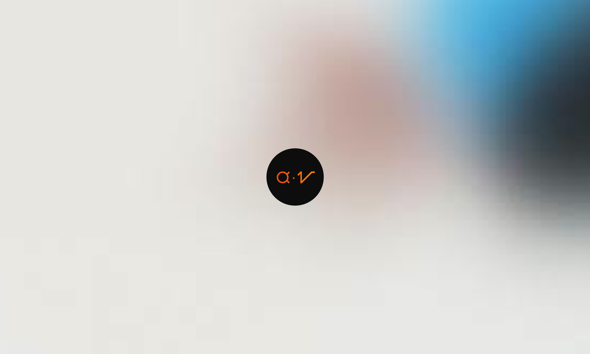

Creative Script
Identité Visuelle
Révélez votre créativité scénaristique !
Creative Script était un concours de scénario que j'ai organisé entre amis durant l'été 2019. Le but était de promouvoir la créativité scénaristique en écrivant à partir de 3 éléments de corpus : Une image, un mot et un son. L'idée vient de quand j'étais plus jeune, je possédais un énorme livre avec une photo sur chaque page et chaque page représentait une année ("Siècle" par Bruce Bernard). Et je me posais toujours la question de ce qu'il pouvait se passer dans ces scènes, quelles histoires et dialogues pourrait-on créer.
Pour et par les scénaristes
J'ai fait une première session de concours où le gagnant choisissait le logo final parmi mes 3 propositions graphiques. Pour les 2 autres concours, le gagnant du concours voyait son scénario être semi-illustré : une page écrite faisant face à une page illustrée, en miroir. Les illustrateurs, que j'ai personnellement rémunérés, faisaient partie de mon entourage eux aussi. Deux histoires ont donc pu être imprimés : "The girl" écrit Benjamin Lemaitre et illustré par Antoine Plouviez, puis "In the pines" écrit Paul Hyaumé et illustré par Etienne Rabin
Année
Juillet 2019
Read in English 🇬🇧